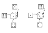
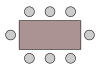
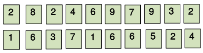

Al-Khalil (717-786), um matemático e criptógrafo árabe, escreveu o Livro de Mensagens Criptográficas. Ele contém o primeiro uso de permutações e combinações, para listar todas as palavras árabes possíveis com e sem vogais.
A regra para determinar o número de permutações de \(n\) objetos era conhecida na cultura indiana por volta de 1150. O Līlāvatī, do matemático indiano Bhāskarācārya (Bhaskara II), contém uma passagem que se traduz em:
O produto da multiplicação da série aritmética começando e aumentando pela unidade e continuando até o número de casas, serão as variações do número com algarismos específicos.
Permutar uma lista de objetos é mudar a ordem em que eles estavam. O número de permutações de \(n\) objetos distintos, é o número total de maneiras de ordenar estes \(n\) objetos. Para descrever o número de permutações de \(n\) objetos distintos, usamos as notações:
\begin{equation*}
P_n ~~\text{ ou } ~~ P(n).
\end{equation*}
Exemplo1.3.2.
Todas as permutações dos elementos \(1, 2, 3\text{:}\)
Pelo princípio multiplicativo, temos \(n\) modos de escolher o elemento que ocupará o primeiro lugar, uma vez tomada essa decisão, teremos \(n-1\) modos de escolher o elemento que ocupará o segundo lugar, e assim por diante, até que haja apenas um único modo de escolher o elemento que ocupará o último lugar. Portanto
O fatorial de um número natural \(n\) é denotado por \(n!\) e consiste na multiplicação desse número por seus antecessores, com exceção do zero. Ou seja
Para calcular \(P_n\) no Sage, usamos a função fatorial: \(\verb|factorial|\text{.}\) Definimos \(\verb|P(n)=factorial(n)|\) apenas para abreviar, confira o cálculo de \(\verb|P(5)|\) apertando no botão "Evaluate (Sage)".
Uma vez definida a função \(\verb|P(n)=factorial(n)|\text{,}\) podemos combiná-la com outras operações já definidas no Sage. Veja na próxima célula o cálculo de \(2\times P_5 + 3\times P_4\text{:}\)
Definição1.3.7.
Um anagrama é uma palavra ou expressão elaborada usando exatamente as mesmas letras que a palavra ou expressão original. Por exemplo, a palavra ROMA é um anagrama da palavra AMOR e vice-versa.
Nos dicionários, um anagrama é a transposição das letras de uma palavra (ou frase) para formar outra palavra (ou frase). Observe que pela definição do dicionário, só seria contado os casos em que a permutação das letras formassem outra palavra (ou frase). No entanto, em matemática, qualquer permutação das letras de uma palavra é considerado como anagrama.
A consoante inicial pode ser escolhida de \(4\) maneiras, uma vez feita essa escolha, a consoante final pode ser escolhida de \(3\) maneiras. Restam quatro letras que podem ser ordenadas de \(P_4\) maneiras. Pelo Princípio Multiplicativo, a resposta é
Temos 5 consoantes e 3 vogais, então são 5 opções para escolher a primeira letra e 3 opções para escolher a última letra. Depois de fazer essas escolhas sobram 6 letras que podem ocupar as outras 6 posições. Portanto a resposta é
Temos \(3!\) modos de ordenar as letras S,I,N. Considerando cada permutação das letras S,I,N como um elemento, ficamos com 6 elementos no total para serem ordenados, o que pode ser feito de \(6!\) modos. A resposta é
item a. Inicialmente, podemos ordenar as \(12\) pessoas em uma fila. O primeiro grupo será formado pelas \(5\) primeiras pessoas, o segundo grupo, pelas \(4\) pessoas seguintes e o terceiro grupo pelas \(3\) últimas pessoas. O número de maneiras de ordenar as \(12\) pessoas é \(P_{12}=12!\text{.}\)
Note que, dessa maneira, as pessoas indicadas por \((1,2,3)\) e \((2,1,3)\) representam o mesmo grupo de três pessoas. Assim, precisamos dividir \(12!\) pelo número de maneiras de ordenar as pessoas, dentro de cada grupo. Logo, a resposta é dada por
item c. Podemos aplicar a mesma ideia do item b., porém, a ordem dos grupos não importa. Logo, precisamos dividir pelo número de maneiras de ordenar os grupos. Portanto, a resposta é
Como os números foram escritos em ordem crescente, os que começam com \(2, 3\) e \(5\) aparecem antes do número \(653289\text{.}\) Existem \(5!\) números que começam com cada um destes algarismos, ou seja \(3\times 5!\) números.
Existem \(4!\) números que começam com \(62\text{,}\) e a mesma quantidade que começam com \(63\text{,}\) ou seja \(2\times 4!\) números.
Existem \(3!\) números que começam com \(652\text{.}\)
O próximo número já que o que queremos. Portanto, a resposta é
Começando com \(2, 3, 5\) e \(6\) temos um total de \(4\times 5! = 480\) números. Se considerarmos também, todos que começam com \(8\text{,}\) teremos mais \(120\) números, ultrapassando a posição \(500\text{.}\)
Já sabemos que o número que ocupa a posição \(500\) começa com o algarismo \(8\) e que o primeiro número com o algarismo \(8\) ocupa a posição \(481\text{.}\) Precisamos encontrar o número que começa com o algarismo \(8\) e está na posição \(20\text{,}\) dentre estes números que começam com \(8\text{.}\)
Começando com \(823, 825\) e \(826\text{,}\) são \(3\times 3! = 18\) números. Dessa forma, o número seguinte está na posição \(19\text{,}\) dentre os que começam com o algarismo \(8\text{.}\) Assim, o número \(829356\) está na posição \(499\) e o número \(829365\) está na posição \(500\text{.}\)
(Usando o Sage)
Quando calculamos todas as permutações no Sage, a saída é exibida em ordem crescente. Como as listas no Sage começam a ser contadas a partir do zero, podemos consultar a permutação de posição 500 com o comando abaixo:
Tecnologia1.3.13.
Implementação em Sage para verificar respostas de problemas como o Exemplo 1.3.12.
No campo abaixo, digite um número para obter a posição dele, numa permutação dos dígitos do número informado.
Figura1.3.14.
Escolha os dígitos que serão permutados e escreva como um número, em seguida, escolha a posição para obter o número que a ocupa.
Figura1.3.15.
Definição1.3.16.
Um palíndromo (ou capicua) é uma sequência de caracteres que pode ser lido da esquerda para a direita ou da direita para a esquerda, mantendo seu sentido. Esses caracteres podem ser número, palavra ou frase.
Por exemplo, \(12321\text{,}\) "osso" e "Socorram-me, subi no ônibus em Marrocos", são palíndromos.
Exemplo1.3.17.
Quantos números palíndromos de \(3\) algarismos há em nosso sistema de numeração?
Com os algarismos \(1,3,5,7,9\text{,}\) quantos palíndromos de \(4\) algarismos conseguimos formar?
Para formar um número palíndromo com três algarismos, quando o primeiro algarismo for escolhido, o terceiro já está definido como sendo igual ao primeiro. Depois desta escolha, resta apenas o segundo algarismo para ser definido.
Para escolher o primeiro algarismo temos \(9\) opções, pois o zero não é permitido, para o segundo algarismo, temos \(10\) opções. Portanto, a resposta é
Para o primeiro algarismo, do número que queremos formar, temos 5 opções. Uma vez feita essa escolha, o último algarismo estará determinado e para o segundo algarismo também temos 5 opções. Uma vez feita a escolha do segundo algarismo, o terceiro estará determinado. Portanto, no total são
\begin{equation*}
5\times 5 = 25,
\end{equation*}
palíndromos possíveis.
Fato1.3.18.
O palíndromo do Chico.
Quando Chico era nosso homem na Itália toda semana a gente publicava matéria dele. Era um correspondente aplicado. Me lembro de umas fotos que mandou, posando ao lado de nosso ancestral, o temível Pasquino.
Agora... Liguei para ele pedindo para escrever alguma coisa para o primeiro número do Pasquim paulista. "Minha agenda estourou. Tô enlouquecido, ensaiando o show com Bethânia para o dia 2 em Paris." "Pô, Chico, tremenda sacanagem nos deixar na mão!" "Fazer matéria nem pensar, mas se vocês quiserem um palíndromo..." Palíndromo, como talvez só o Houaiss saiba, é uma frase que significa literalmente o mesmo, seja lida de cá pra lá, como de lá pra cá, da direita para a esquerda. "Levei 5 horas fazendo", disse Chico. "Insônia." Era pegar ou largar. Peguei. E, outra vez por acaso, eis o Pasquim inovando ao publicar o primeiro palíndromo ilustrado. Por outro Chico. (Jaguar)
Pasquim São Paulo Ano XVIII número 13 a 10 de julho de 1986
O palíndromo que Chico Buarque fez: "Até reagan sibarita tira bisnaga ereta"
O número total de modos de ordenar as \(12\) pessoas é \(12!\text{.}\) Vamos contar o número de maneiras de ordenar as \(12\) pessoas de modo que \(3\) determinadas pessoas fiquem juntas, para subtrair de \(12!\) e obter a resposta.
Temos \(3!\) modos de ordenar as \(3\) pessoas que vão ficar juntas. Considerando essas \(3\) pessoas como apenas um elemento, ficamos com \(10\) elementos no total e podemos ordenar esses \(10\) elementos de \(10!\) maneiras.
A princípio, temos \(6!\) maneiras de gravar os números nas faces dos cubos. Dessa forma ficaremos com vários cubos repetidos, pois existem várias maneiras de posicionar um cubo, observe que figura que os dois cubos são iguais.

Figura1.3.19.Dois dados equivalentes.
Para posicionar um cubo, temos 6 maneiras de escolher qual a face que ficará para cima, uma vez feita essa escolha, sobram 4 faces para escolher uma que ficará de frente. Portanto existem \(6\times 4 = 24\) maneiras de posicionar um cubo. A resposta é
Podemos escolher a face do 1 de 6 maneiras, a face do 6 estará automaticamente determinada. Uma vez que as faces do 1 e do 6 estão definidas, temos 4 maneiras de escolher a face do 2. A face do 5 estará automaticamente definida. Agora temos duas maneiras de escolher a face do 3. A face do 4 também estará automaticamente determinada.
Assim como no item a. precisamos dividir pelo número de maneiras de posicionar os dados. Fazendo a divisão, obtemos o resultado
(UPE 2013 tradicional) Oito amigos entraram em um restaurante para jantar e sentaram-se numa mesa retangular, com oito lugares, como mostra a figura a seguir:

Dentre todas as configurações possíveis, quantas são as possibilidades de dois desses amigos, Amaro e Danilo, ficarem sentados em frente um do outro?
a) 1440 \(~~~\) b) 1920 \(~~~\) c) 2016 \(~~~\) d) 4032 \(~~~\) e) 5760
Uma vez que Amaro escolha um lugar, Danilo já está com seu lugar definido. Amaro pode escolher um lugar de 8 modos. Depois que Amaro e Danilo definiram seus lugares, os outros 6 amigos podem escolher quaisquer lugares, portanto restam \(6!\) possibilidades. A resposta é
(UPE 2013 tradicional) Seguindo a etiqueta japonesa, um restaurante tipicamente oriental solicita aos seus clientes que retirem seus calçados na entrada do estabelecimento. Em certa noite, 6 pares de sapatos e 2 pares de sandálias, todos distintos, estavam dispostos na entrada do restaurante, em duas fileiras com quatro pares de calçados cada uma. Se esses pares de calçados forem organizados nessas fileiras de tal forma que as sandálias devam ocupar as extremidades da primeira fila, de quantas formas diferentes podem-se organizar esses calçados nas duas fileiras?
a) \(6!\)\(~~~\) b) \(2\cdot 6!\)\(~~~\) c) \(4\cdot 6!\)\(~~~\) d) \(6\cdot 6!\)\(~~~\) e) \(8!\)
Como as sandálias devem ocupar as extremidades da primeira fileira, temos duas maneiras de escolher onde colocá-las. Uma vez escolhido os lugares das sandálias, temos 6 pares de sapatos e 6 lugares, portanto a resposta é
\begin{equation*}
2\times 6!
\end{equation*}
6.
Considere um tabuleiro de xadrez \(8\times 8\text{.}\)
De quantos modos podemos colocar 8 torres iguais, de modo que haja uma única em cada linha e em cada coluna?
De quantos modos podemos colocar 8 torres diferentes, de modo que haja uma única em cada linha e em cada coluna?
Na primeira linha, temos 8 opções para colocar a primeira torre, na segunda linha temos \(8-1\) opções para colocar a segunda torre, pois ela não pode ficar na mesma coluna que a primeira torre. Seguindo esse raciocínio, na \(i\)-ésima linha, temos \(8-i\) opções para colocar a \(i\)-ésima torre. Logo, a resposta é
\begin{equation*}
8!
\end{equation*}
Seguindo com a ideia do item a, temos \(8!\) modos de escolher os lugares onde as torres podem ocupar, depois disso podemos ordenar as torres de \(8!\) modos, portanto a resposta é
\begin{equation*}
8!\times 8!
\end{equation*}
7.
Um grupo formado por quatro rapazes e uma senhorita vão visitar uma exposição de arte. À entrada, passa uma pessoa de cada vez pela porta da sala de exposições. Um dos rapazes dando-se ares de perfeito cavalheiro, não passa pela porta sem que a senhorita já o tenha feito. Qual o número de modos, isto é, de quantas maneiras diferentes eles podem entrar no recinto?
1º caso: a senhorita será a primeira pessoa a entrar. Nesse caso, os quatro rapazes podem entrar em qualquer ordem, ou seja, \(4!\) possibilidades.
2º caso: a senhorita será a segunda pessoa a entrar. Nesse caso temos 3 possibilidades de escolha o primeiro rapaz, depois temos \(3!\) possíveis ordem para os outros rapazes.
3º caso: a senhorita será a terceira pessoa a entrar. Nesse caso temos \(3\times 2\) possibilidades para os dois primeiros rapazes e \(2\) ordens possíveis para os dois últimos rapazes.
4º caso: a senhorita será a quarta pessoa a entrar. Nesse caso temos \(3!\) ordens para os três primeiros rapazes.
(UPE 2011 seriado) Uma bibliotecária tenta organizar 4 livros diferentes de matemática, 4 livros diferentes de geografia e 2 livros diferentes de inglês em uma estante. O número de modos distintos de organização deve ser de tal forma que os livros da mesma disciplina estejam sempre juntos e que os de geografia apareçam sempre na mesma ordem. Assim, o número de possibilidades dessa arrumação é de
a) \(48\)\(~~~\) b) \(50\)\(~~~\) c) \(96\)\(~~~\) d) \(288\)\(~~~\) e) \(1152\)
O número de modos de ordenar as disciplinas é \(3!\text{.}\) Os livros de matemática podem ser ordenados de \(4!\) maneiras e os livros de inglês podem ser ordenados de \(2\) maneiras. Dessa forma, o número de possibilidades dessa arrumação é
Quantas são as permutações das letras A, B, C, D, E, F, G, H, nas quais, a letra B está situada à direita da letra A e à esquerda da letra F, embora, não necessariamente, em lugares consecutivos?
Inicialmente contamos o número de maneiras de ordenar as oito letras que é \(8!\text{.}\) Dividindo esse valor pelo número de maneiras de ordenar as letras B, A, F, obtemos o resultado, pois em apenas uma das \(3!\) formas de ordenar as três letras teremos a ordem exigida. A resposta é
(UFPE - UFRPE 2003) Seja \(S\) a soma dos números formados pelas permutações dos algarismos \(1, 3, 5, 7\) e \(9\text{.}\) Indique a soma dos dígitos de \(S\text{.}\)
Podemos organizar as \(5! = 120\) permutações de duas em duas, de modo que a soma de cada par seja \(111110\text{.}\) Portanto, o valor da soma de todas as permutações é \(60 \times 111110 = 6666600\text{.}\) Somando os dígitos de \(S\text{,}\) chegamos na resposta que é \(30\text{.}\)
Podemos usar o código abaixo para conferir esta resposta e verificar a resposta de deste mesmo problema, para outros dígitos.
11.
(UFF-RJ) Um garçom anotou os pedidos de três fregueses. Cada freguês pediu um prato principal, um acompanhamento e uma bebida. Posteriormente, o garçom não sabia identificar o autor de cada pedido. Lembrava-se, porém, de que não havia qualquer coincidência entre os pedidos: os pratos principais eram diferentes entre si, o mesmo ocorrendo com os acompanhamentos e as bebidas. O número de maneiras diferentes que o garçom poderia distribuir os pedidos entre os três fregueses é:
a) \((3!)^3\)\(~~~\) b) \((3^3)!\)\(~~~\) c) \(3!\)\(~~~\) d) \(3^{3!}\)\(~~~\) e) \((3!)^{3!}\)
O garçom poderia distribuir os pratos principais de \(3!\) maneiras, os acompanhamentos também poderiam ser distribuídos de \(3!\text{,}\) assim como as bebidas que também poderiam ser distribuídas de \(3!\) maneiras. Portanto a resposta é
\begin{equation*}
(3!)^3.
\end{equation*}
12.
(OPEMAT 2019 - nível 1) Em uma viagem a Recife, o grupo formado pelos números 1, 2, 3, 4 e 5, resolveu tirar fotos próximo ao monumento do Parque das Esculturas do artista Pernambucano Francisco Brennand. Indecisos pela escolha da disposição na foto, eles concordaram em tirar várias fotos em todas as disposições possíveis, permutando os lugares entre si conforme as imagens abaixo:
Por fim, eles colocaram as fotos em ordem crescente de numeração formando a seguinte lista:
Quantas permutações de \(1, 2, 3,\ldots, 9\) há com a propriedade de que, para todo \(1 \leq i \lt 9\text{,}\) os números que aparecem entre \(i\) e \(i+1\) (onde \(i\) pode aparecer tanto antes como depois de \(i+1\)) são todos menores do que \(i\text{?}\) Por exemplo, \(976412358\) é uma permutação com esta propriedade.
Da propriedade, decorre que \(9\) só pode aparecer ou como primeiro ou como último elemento da permutação e que os elementos de \(1\) a \(8\) formam uma permutação com a mesma propriedade. Assim, o número pedido é o dobro do número de permutações de \(1, 2,\ldots,8\) com a mesma propriedade. Da mesma forma, o número de permutações de \(1, 2,\ldots,8\) com a propriedade é o dobro do número de permutações de \(1, 2,\ldots,7\) com a propriedade. Repetindo o raciocínio, concluímos que o número pedido é portanto \(2^8 = 256\text{.}\)
14.
(UPE - SSA 2 - 2014)
Depois de explicar à turma do \(9º\) ano o que é um número palíndromo ou capicua, o professor Barreto pediu que os alunos se organizassem em duplas e entregou algumas cartelas numeradas para que formassem capicuas de três, quatro e cinco algarismos, fazendo o registro de cada resultado possível e podendo reutilizar as cartelas.
Números palíndromos ou capicuas são aqueles que são iguais quando lidos nos dois sentidos, isto é, da direita para a esquerda e da esquerda para a direita. Exemplo: \(232\text{;}\)\(1661\text{;}\)\(45854\text{.}\)
A dupla Ian e Júlia recebeu as cartelas seguintes:

No máximo, quantos capicuas de quatro algarismos essa dupla conseguiu formar?
a) \(21\)\(~~~\) b) \(44\)\(~~~\) c) \(42\)\(~~~\) d) \(36\)\(~~~\) e) \(74\)
que estão disponíveis em pelo menos duas cartelas. Assim, para o primeiro algarismo, temos 7 opções e para o segundo algarismo, temos 6 opções. Para cada escolha dos dois primeiros algarismos, o terceiro algarismo será igual ao segundo e o quarto será igual ao primeiro. Portando, temos \(7\times 6 = 42\) capicuas com dois algarismos distintos.
Observe que usando três ou mais algarismos distintos, não é possível formar uma capicua de 4 algarismos. A resposta é